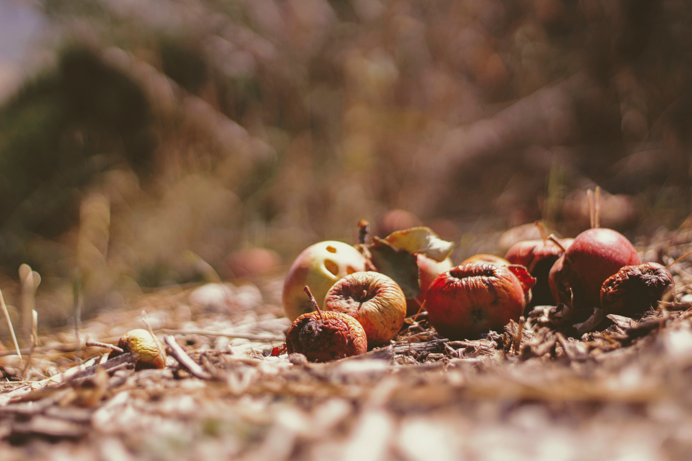

FOO! nace de una búsqueda por un mundo más justo y sustentable en el que todas las personas puedan tener acceso a una alimentación digna. Creemos que la alimentación debe ser universal y que todos tienen derecho a satisfacer sus necesidades alimentarias.
Al mismo tiempo consideramos necesario tener consciencia sobre el cuidado del medio ambiente debido a las consecuencias climáticas que se generan al perjudicarlo.

Somos estudiantes de 3º E.M.T. Informática perteneciente a U.T.U. y esta página forma parte de nuestro
proyecto de pasaje de grado.
Nos dedicamos al desarrollo de herramientas web que brindan soluciones a problemáticas que afectan a las personas más vulnerables de la sociedad.